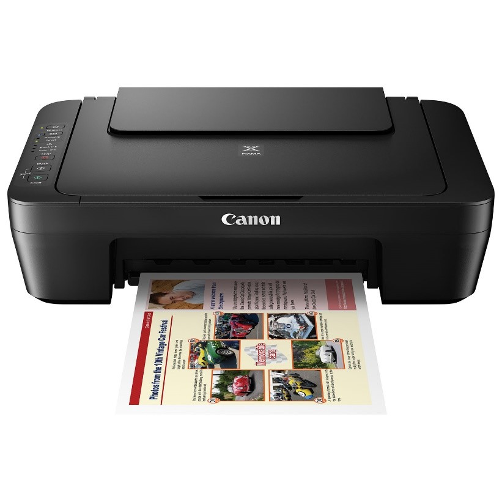

Višenamjenski uređaji (kombinirani uređaji, mulitpraktici, engl. all-in-onecombo print/scan/fax/copy devices, multifunction machines, multifunctioncentre, MFC) u jednom uređaju objedinjuju pisač, skener, kopirni aparati faksimil uređaj (faks). Tako objedinjen uređaj zauzima mnogo manje mjesta i ima nižu cijenu od skupa pojedinačnih uređaja. Kod nekih su višenamjenskih uređaja ugrađeni svi navedeni uređaji, a kod dugih su neki uređaji ispušteni.
U višenamjenske uređaje ugrađuju se dvije vrste pisača: pisači s mlazom tinte i laserski pisači. Prvih ima mnogo više zbog mnogo manje početne cijene, posebice ako je riječ o ispisu u boji. Prednost druge skupine je niža cijena otiska pa su oni dugoročno gledano isplativiji.
Ugrađeni skeneri mogu biti plošni ili s pomičnim papirom. Kod plošnih predložak se polaže na staklo ispod kojeg putuje optička glava. Prednost plošnog skenera je mogućnost skeniranja bilo kakvih predložaka, npr. knjiga, slika koje se ne mogu savijati i sl. Skener s pomičnim papirom (engl. document scanner) ima ne pomičnu optičku glavu, a predložak se sustavom valjaka pomiče ispred te glave. Može skenirati samo pojedinačne listove koji se mogu savijati što je ponekad prepreka, ali ima mogućnost automatskog skeniranja većeg broja listova bez nadzora čovjeka.